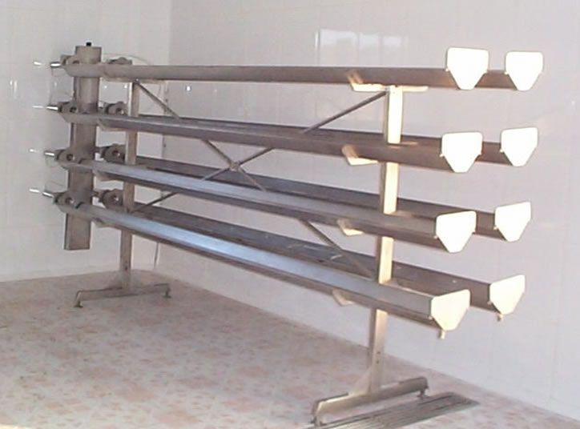

Talleres Noxinox S.L.U. | Aviso legal
Construida totalmente en acero inox. AISI 304, con escaleras de acceso, barandillas de protección y suelo antideslizante de acero inox. De construcción robusta y dimensiones adaptadas a las necesidades y espacio disponible. Con esta estructura se facilita el flujo de la cuajada y el acceso a las cubas, evitando la realización de obras de albañilería en caso de dar una nueva ubicación a la maquinaria.
Para salas de fabricación, y/o como contenedor de moldes. Construido totalmente en acero inox. AISI 304, con ruedas de acero inox. Dimensiones y capacidad según destino y necesidades
 Caudalímetro “Endress+Hauser” con desgasificador
Caudalímetro “Endress+Hauser” con desgasificador
Montadas sobre una bancada realizada íntegramente en acero inox. AISI 304, con perfil angular recubierto de una guía plástica especial, de polietileno 1000, sobre la que se desliza, encastrada, la banda transportadora. La banda se desplaza en estructura completamente abierta, lo que facilita el proceso de limpieza. La tracción de la banda se realiza por medio de moto-variador eléctrico para coordinar su velocidad de circulación con las necesidades de producción. Tamaño y modelo de la banda adaptable según necesidades y espacio disponible, incluyendo tramos de curva, pendientes, zonas de acumulación, etc.
Sistema centralizado para facilitar los procesos de lavado y desinfección de las instalaciones construido íntegramente en acero inox. AISI 304 y AISI 316.
Equipado con depósitos para contención de agua limpia, de agua recuperada del enjuague alcalino, de solución ácida y depósito de solución alcalina, bomba de impulsión y valvulería e interconexiones.
Equipo opcional:
- Control PLC programable por el usuario para distintas funciones de lavado.
- Dosificación automática de productos de limpieza, con control de concentración.
Dimensiones y capacidad de los depósitos según necesidades y espacio disponible
La utilización de estas cubas agiliza en gran medida el proceso de fabricación de cualquier tipo de queso, facilita el acceso a la cuajada para realizar el llenado de los moldes. Construida totalmente en acero inox. AISI 304. Opcionalmente se puede dotar con sobrefondo perforado para facilitar el desuerado, y/o reja de bloqueo desplazable, planchas y clilindros neumáticos para realizar pre-prensado. Dimensiones y capacidad según necesidades de fabricación.
Características principales:
- Fondo plano con inclinación para descarga por pistón neumático
- Acabado interior pulido brillante
- Acabado exterior satinado
- Válvulas neumáticas para desuerado en alturas fijas
- 2 Liras de corte y agitación
- Luz interior
- 4 Esferas de limpieza
- Patas y pernos de nivel con balancín para inclinación en descarga
- Camisa con serpentín para calentamiento con vapor o agua recirculada
- Revestimiento de acero inox del cuerpo de aislamiento en fondo y laterales
- Moto-reductor con variación electrónica de velocidad y transmisión elástica.
- Válvula de decarga
- Entrada de leche antiespumaCuadro eléctrico de control y funcionamiento (con control de temperatura e indicador de nivel).
Construida totalmente en acero inox. AISI 304. Apta para calentar leche hasta 60-80ºC y enfriarla, mediante circulación de agua en la camisa, aislamiento térmico con forro de acero inox. Adaptable para calentamiento directo de la cámara de agua, con butano o leña. Equipada con válvula para desuerado, planchas de pre-prensado, lira vertical y otra horizontal. Dimensiones y capacidad según necesidades.
Cuba quesera manual para cuajar o pasteurizar
Equipada con:
- camisa de calentamiento por circulación de agua o vapor (opcional), con aislamiento térmico,
- cortadora mecánica accionada por moto-variador electrónico o mecánico,
- apoyos de nivelación, o basculante por acción de pistón neumático, para efectuar la descarga a desuerador.
Cilíndrico, vertical. Construido en acero inox. AISI 304, con aislamiento de 80 mm. de poliuretano expandido (densidad 35 a 40 Kg m3) y forro de acero inox., patas de forma troncocónicas con pernos de nivelación o brida de anclaje al suelo.
Equipado con los siguientes accesorios:
- Boca de hombre
- Entrada de leche antiespuma
- Descarga con racor NW DIN
- Agitador con motoreductor (superior o lateral)
- Mirilla o nivel exterior
- Dispositivo de limpieza.
Cilíndrico, vertical. Construido en acero inox., con aislamiento de poliuretano expandido (densidad 35 a 40 Kg m3) y forro de acero inox., patas de forma troncocónicas con pernos de nivelación o brida de anclaje al suelo.
Equipado con los siguientes accesorios:
Serpentín interior para calentamiento del agua
Mirilla o nivel exterior
Termómetro para control de temperatura interior.
Adaptable a todo tipo de moldes del tipo microperforado, solamente cambiando placas de extracción y campanas. Con una cadencia de trabajo comprendida entre 500 y 750 moldes por hora (en máquinas de 2 campanas).
Construido totalmente en acero inox. AISI 304, con medidas generales exteriores de 1.700 x 1.185 x 2.200 mm (largo x ancho x alto).
El proceso de extracción se realiza en dos fases o zonas diferenciadas:
- Zona de extracción de tapas: La tapa se extrae mediante un proceso de desplazamiento entre dos placas, por el que cae a la cinta que la traslada hasta la lavadora.
- Zona de liberación del queso: mediante una campana que baja y descarga aire con una presión de 5/6 bares, lo que produce el desprendimiento del queso hacia la cinta que lo transporta al siguiente proceso de producción y prelimpieza del molde por efecto del soplado. El molde vacío se traslada por cinta transportadora a la máquina lavadora.
Adaptable a todo tipo de moldes del tipo microperforado, solamente cambiando placas de extracción y campanas.
Construido totalmente en acero inox. AISI 304, con medidas generales exteriores de 1.000 x 600 x 2.000 mm (largo x ancho x alto).
El proceso de extracción se realiza en dos fases o zonas diferenciadas:
- Zona de extracción de tapas: La tapa se extrae mediante un proceso de desplazamiento entre dos placas.
- Zona de liberación del queso: mediante una campana que baja y descarga aire con una presión de 5/6 bares, lo que produce el desprendimiento del queso.
Construídas totalmente en acero inox. AISI 304, con estantes de chapa perforada que mejoran la ventilación en cámaras. De construcción robusta y posibilidad de incorporar ruedas de nylon para facilitar el desplazamiento o utilización como carro. Las bandejas son extraíbles para facilitar su limpieza en túnel de lavado o manualmente. Adaptable en largo y altura a cualquier espacio disponible.
Construido totalmente en acero inox., con circuito interior para circulación de vapor o agua, cámara aislante interior, tapa abisagrada de apertura total que soporta el motor y termómetro. Fondo inclinado para facilitar la descarga y escurrido. Posibilidad de incorporar resistencias eléctricas para calentamiento, así como un segundo agitador para fabricación de yogurt batido. Dimensiones y capacidad según destino y necesidades.
Totalmente construida en acero inox. AISI 304, con resalte lateral para proteger de la humedad a las personas que manipulan. Dotada con un estante-escurridor intermedio de varillas. Tamaño según necesidades. Con patas fijas o ruedas giratorias de acero inox.
Para realizar automáticamente la aplicación de antimohos a los quesos.
Realizada íntegramente en acero inox. AISSI 304. Dotada de sistema de autolavado.
Estructuralmente está formada por dos partes:
- Túnel: en la parte superior, dotado de cinta transportadora de acero inox. y sistema de ventilación forzada para escurrido de la pintura sobrante (aplicada por semiinmersión y ducha simultáneas).
- Parte inferior: compartimento donde se alojan los depósitos de pintura y agua, las bombas de impulsión y el ventilador de escurrido.
Para producir automáticamente la contracción de las bolsas al vacío por ducha de agua caliente.
Construida totalmente en acero inox. AISI 304, con total accesibilidad a todos sus componentes y accionada por motovariador que regula la velocidad de paso.
Equipada con:
- Cinta transportadora construida totalmente con piezas de acero inox que se deslizan por una guía de polietileno.
- Control de temperatura (calentamiento por vapor o resistencia eléctrica)
- Entrada automática del agua.
Para fabricación de queso, con control automático que garantiza, y registra, la perfecta pasteurización de la leche.
Ciclo de trabajo:
Entrada de leche: 4/25º C
Pasteurización a 75º C
Salida de leche para fabricación de queso a 32º C
Panel de control equipado con:
- Registrador gráfico de temperatura.
- Regulador electroneumático para control de válvula termoreguladora.
- Válvula de desvío de leche no pasteurizada al nivel constante de funcionamiento a automático y comandada desde el panel.
- Con caudal y dimensiones adaptadas a las necesidades de producción del usuario.
Para realizar la aplicación de antimohos a los quesos. Realizada íntegramente en acero inox. AISSI 304. Dotada de sistema de escurrido en la parte interior de la tapa que permite la retorno al tanque del producto antimoho sobrante, y de ruedas inox para facilitar su desplazamiento por la sala de fabricación.
Construida totalmente en acero inoxidable. Las barras que soportan los moldes son cuadradas, para obtener una mayor resistencia al peso y una mayor superficie de contacto con los planos de los moldes. Son ajustables para adaptar su separación a cualquier tipo y tamaño de molde. Los cilindros neumáticos están fabricados íntegramente en acero inox., para evitar su deterioro por corrosión. Con un consumo mínimo de aire a presión, sólo en el momento de activar los émbolos. La presión se mantiene controlada por un grupo de filtro-regulador-lubricador. Opcionalmente se le puede acoplar un control automático de prensado. Tamaños y modelos según necesidades y espacio disponible.
Construida totalmente en acero inoxidable. Las canaletas que soportan los moldes tienen una mayor resistencia al peso y una mayor superficie de contacto con los planos de los moldes. Permiten asentar en ellas cualquier tipo y tamaño de molde. Los cilindros neumáticos están fabricados íntegramente en acero inox., para evitar su deterioro por corrosión. Con un consumo mínimo de aire a presión, sólo en el momento de activar los émbolos. La presión se mantiene controlada por un grupo de filtro-regulador-lubricador. Opcionalmente se le puede acoplar un control automático de prensado. Tamaños y modelos según necesidades y espacio disponible
Construida totalmente en acero inoxidable. Ajustable para adaptar su separación a cualquier tipo y tamaño de molde. Los cilindros neumáticos están fabricados íntegramente en acero inox., para evitar su deterioro por corrosión. Con un consumo mínimo de aire a presión, sólo en el momento de activar los émbolos. La presión se mantiene controlada por un grupo de filtro-regulador-lubricador. Opcionalmente, se le puede acoplar control automático de prensado. Tamaños y modelos según necesidades y espacio disponible.
Para realizar el salado de los quesos por inmersión en la solución salina, con el consiguiente ahorro de agua, sal y espacio en fábrica. Construida totalmente en acero inox. AISI 316, con cestones de inmersión. De dimensiones adaptadas a las necesidades y espacio disponible.
Construido totalmente en acero inox. AISI 304, con fondo en tres planos inclinados para facilitar la descarga total, patas con pernos de nivelación y descarga por el fondo con válvula NW DIN Reforzado con doble pestaña en la parte alta y correa exterior de perfil V en medio de la altura. Tamaño y modelos según necesidades y espacio disponible. Capacidad: 500 lts.
Para moldes plásticos, incluso microperforados, dotado de guías ajustables y escamoteables para el lavado de cualquier formato de molde y cajas-contenedores plásticos.
Construida totalmente en acero inox. AISI 304.
El proceso estándar de lavado se produce, con un consumo muy bajo de agua, en tres fases:
- Lavado: por recirculación de disolución de limpieza, dosificable, chorreo a una presión manométrica de 5/6 bares, mediante boquillas de aspersión convenientemente orientadas.
- Escurrido: el detergente que gotea es devuelto a la zona de lavado.
- Aclarado: por recirculación de agua a temperatura controlada, a una presión de 3 bares y, finalmente, pulverizado con agua fría a presión de red, que se reutilizará en esta misma fas
Opciónes:
- Prelavado, utilizando el agua caliente sobrante del aclarado de la fase 3.
- Dosificador de producto de limpieza, con medidor de concentración.
- Ventiladores para apurado del escurrido entre las distintas fases del proceso